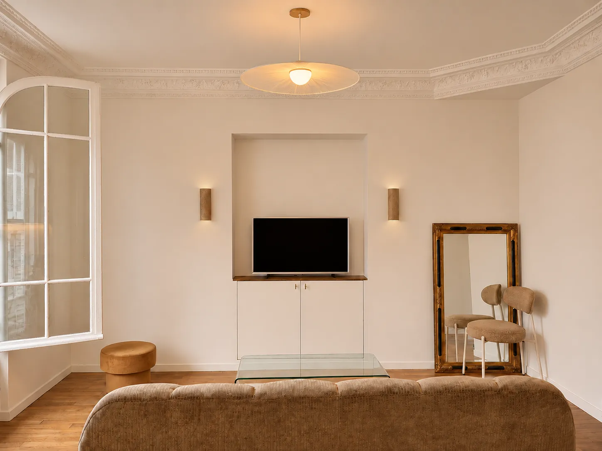
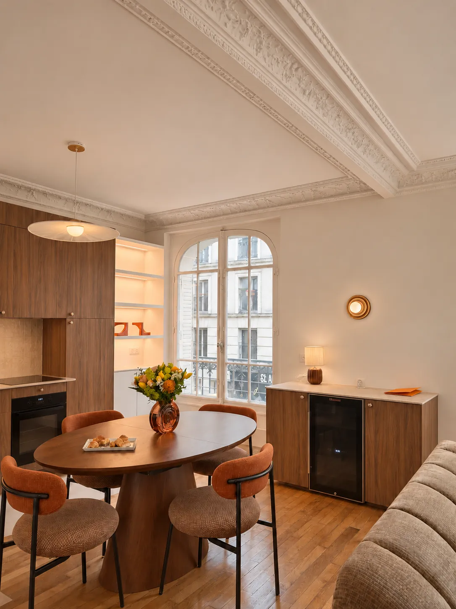
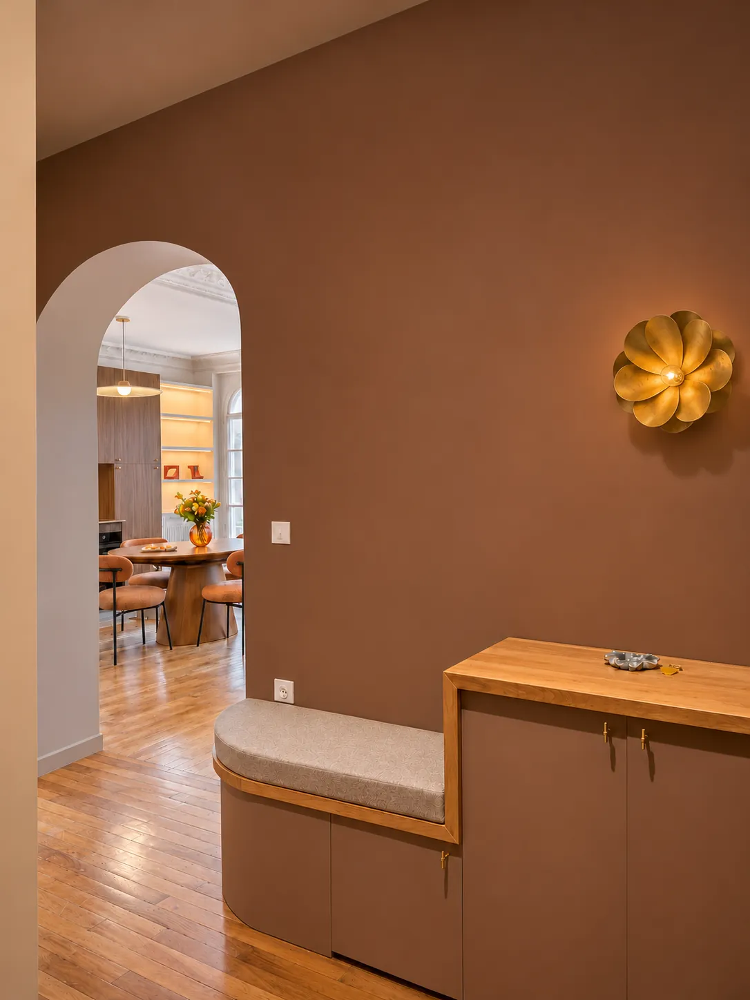
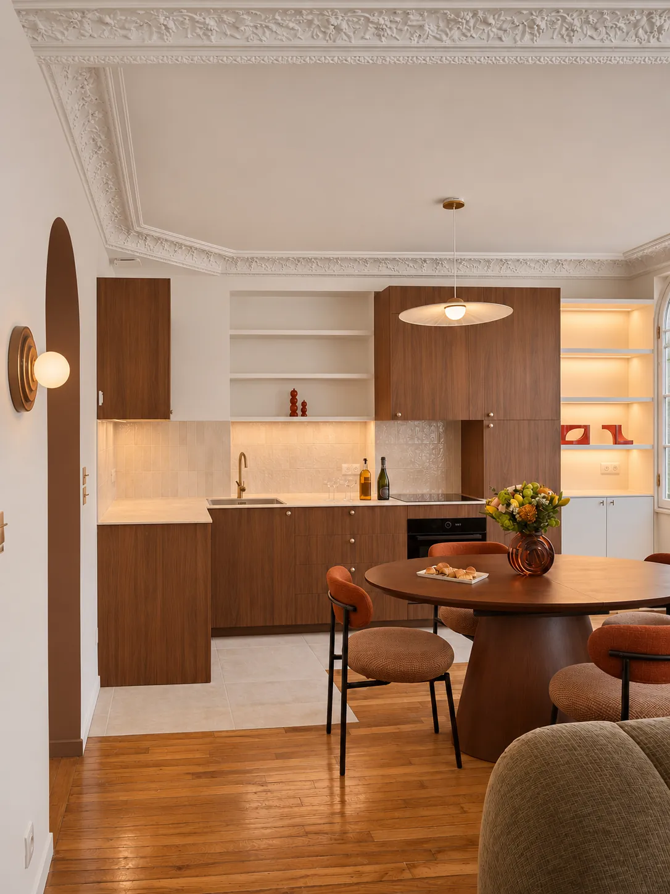
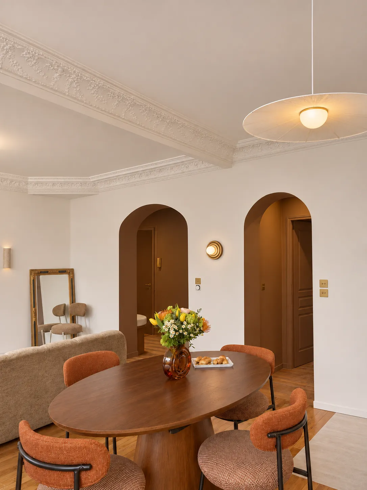
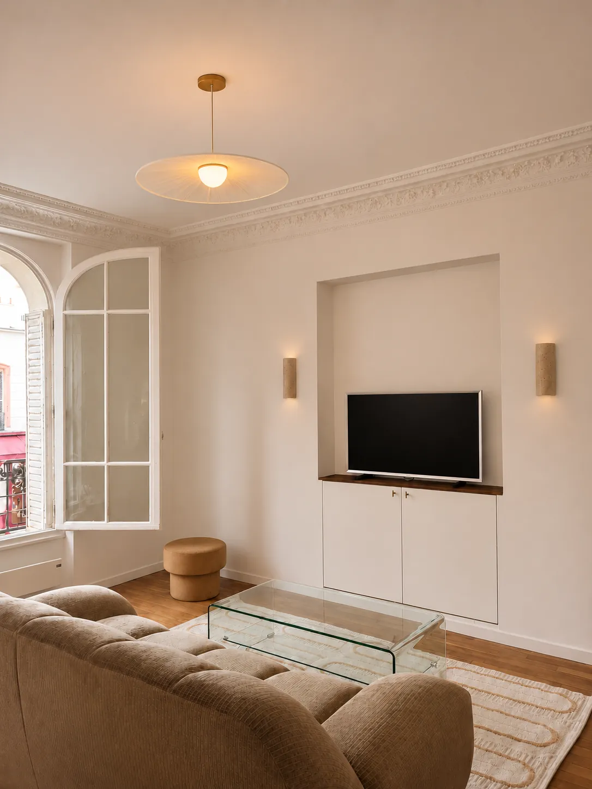

Stouls Studio / Portfolio / Apartment, Bagnolet
Apartment, Bagnolet
A 65 m² apartment at the eastern gates of Paris, fully renovated around one large room for cooking, eating and sitting.
- Type
- Main residence
- Location
- Bagnolet, east of Paris
- Surface
- About 65 m² (700 sq ft)
- Work by the studio
- Full renovation
The kitchen, the dining table and the sofa share a single room under the original cornices. The kitchen is in walnut, with open shelves lit from within, and an oval walnut table stands in front of it with chairs in terracotta fabric.
On the living side, the television sits in a plastered niche above white cupboards, between two stone wall lights, opposite a deep velvet sofa. Tall arched windows light the room from two sides.
Arches return in the doorways. The entrance is painted a warm brown and fitted with a bench and a cupboard in the same colour under an oak top, so the hall works as a room of its own.







A project like this one
If this is close to what you have in mind for Paris, tell me. A link to this page and two lines about your budget and timing are enough to start.